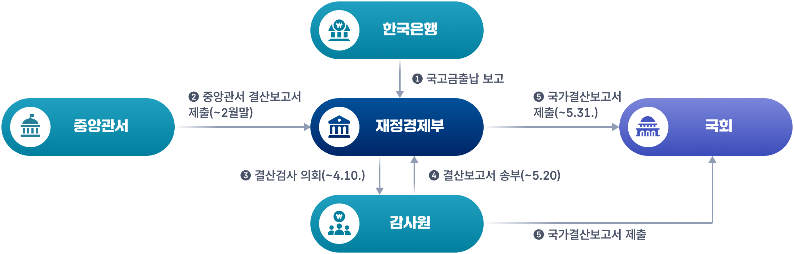
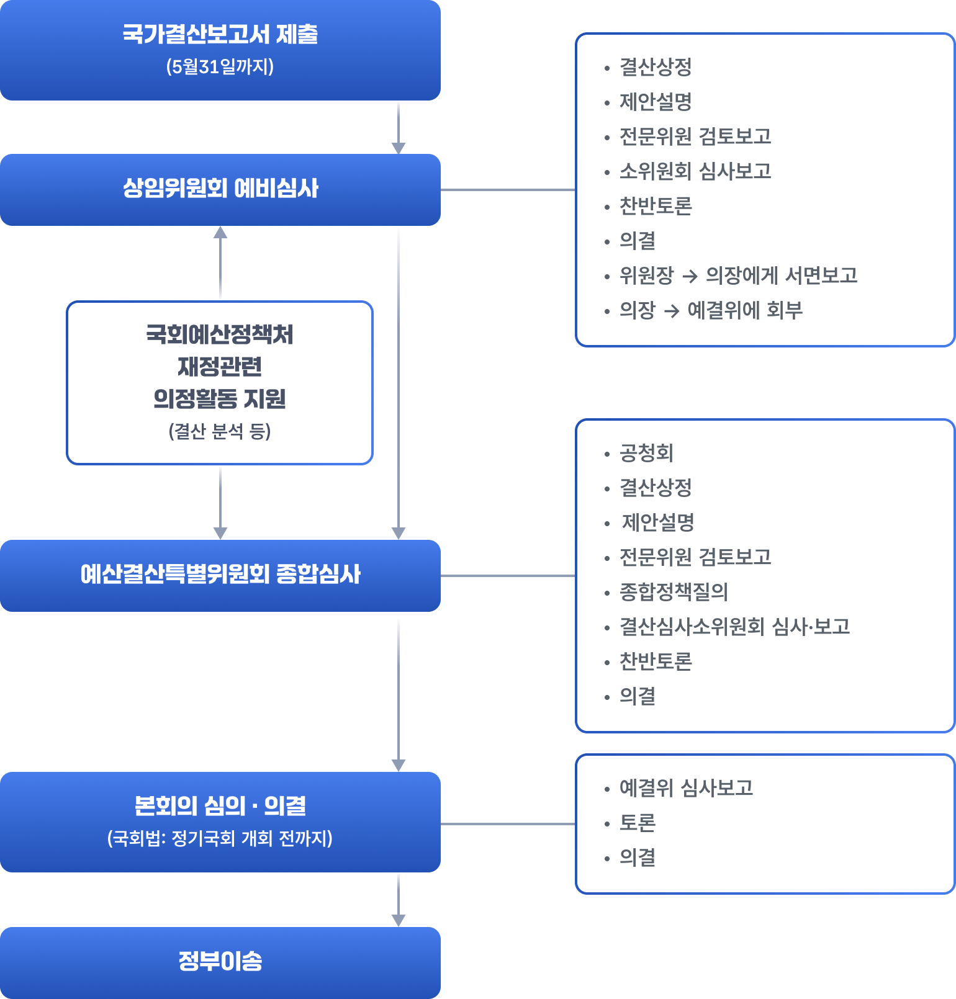

예산・결산・운용절차
1. 정부결산
정부 결산은 한 회계연도 동안 집행된 예산과 기금의 결과를 정리하여, 재정운용이 법과 계획에 맞게 이루어졌는지를 공식적으로 확인하는 과정입니다. 즉, 국회가 승인한 예산이 실제로 어떻게 집행되었는지, 수입과 지출·재산과 채무·사업성과가 어떠했는지를 종합적으로 보고하고 검증받는 절차입니다.
먼저 각 부처와 기금은 해당 연도 세입·세출 출납을 마감하고, 부처별 결산보고서와 기금 결산보고서를 작성합니다. 이 보고서들에는 일반회계, 특별회계, 기금을 통합한 수입·지출 내역이 담깁니다. 재정경제부는 이를 통합해 국가결산보고서를 작성하며, 국무회의 심의와 대통령 승인을 거쳐 공식적인 결산서로 확정합니다.
이후 감사원은 세입·세출, 재산의 취득·관리·처분, 채무 등 전반에 대한 결산검사를 실시하여 결산의 합법성과 정확성을 점검합니다. 회계검사 결과에 따라 감사원은 변상판정, 징계·문책 요구, 시정·주의·개선 요구, 고발 등을 할 수 있습니다. 감사를 마친 국가결산보고서는 국회에 제출되며, 국회가 이를 심사해 재정운용이 적절했는지 평가하게 됩니다.
국가결산보고서에는 현금주의·단식부기 방식의 세입세출(수입지출)결산과, 발생주의·복식부기 방식의 재무제표(재정상태표, 재정운영표, 순자산변동표, 현금흐름표), 그리고 사업별 성과를 정리한 성과보고서가 함께 포함됩니다. 이를 통해 “얼마를 어떻게 썼는지”뿐 아니라 “재정 상태가 어떻게 변했는지”, “각 재정사업이 어떤 성과를 냈는지”까지 포괄적으로 파악할 수 있도록 설계되어 있습니다.

2. 국회의 심의
국회의 결산 심의 과정은 크게 상임위원회 예비심사 → 예산결산특별위원회 종합심사 → 본회의 심의·의결의 세 단계로 이루어집니다. 정부가 국가결산보고서를 국회에 제출하면, 소관 상임위원회가 먼저 부처별·사업별로 결산을 예비심사하고 그 결과를 예산결산특별위원회에 보고합니다. 예산결산특별위원회는 이를 통합해 정부 전체 재정운용을 종합적으로 심사한 뒤 본회의에 심사결과를 보고하고, 본회의에서 최종적으로 결산을 의결합니다.
결산 심의·의결은 “정부가 지난 한 해 예산을 제대로 집행했는지”에 대해 국회가 사후적으로 승인하거나 문제를 지적하는 절차입니다. 이 과정에서 국회는 예산집행의 적법성과 타당성을 점검하고, 위법하거나 부당한 사항이 발견되면 시정요구를 통해 정부와 해당 기관에 변상·징계·제도개선·주의·시정 등을 요구할 수 있습니다. 또한 필요할 경우 특정 사안에 대해 감사원에 감사를 요구하는 제도도 두고 있습니다.
결산자료에 세입세출결산(현금주의), 재무제표(발생주의·복식부기), 성과보고서가 함께 포함되면서, 국회가 재정의 규모와 흐름뿐 아니라 재정사업의 성과까지 함께 심사할 수 있게 되어 있습니다. 국회가 결산 심사 후 채택하는 시정요구 건수는 매년 상당한 규모에 이르며, 정부와 각 기관은 이 시정요구 사항을 지체 없이 처리하고 그 결과를 국회에 보고해야 합니다.
재정절차에서 예산과 결산의 순환 구조가 본연의 기능을 수행하기 위해서는 국회가 시정요구한 사항들에 대해서 정부의 후속조치 이행 여부를 면밀히 점검하여 결산 심의가 다음 연도 예산편성·집행에 실제로 반영되도록 하는 것이 중요합니다.

3. 재정사업의 성과관리
성과관리제도는 예산을 얼마나 썼는지(투입)를 보는 데서 나아가, 그 돈으로 무엇을 얼마나 달성했는지(성과)까지 함께 보자는 취지에서 도입된 제도입니다. 다시 말해, 예산의 편성·심의·집행·결산 전 과정을 성과 중심으로 운영하여 재정의 경제성·능률성·효과성을 높이고, 정부가 맡은 일을 제대로 했는지에 대한 책임성을 강화하려는 것입니다. 우리나라는 1990년대 이후 재정적자와 사회보장 지출 확대에 대응해, OECD 국가들과 마찬가지로 1999년부터 단계적으로 성과관리제도를 도입해 왔습니다.
결산과의 연결고리는 두 가지입니다. 첫째, 결산 자료 안에 성과보고서와 재무제표가 포함되면서, 국회가 결산을 심의할 때 단순히 “예산을 다 썼는가”가 아니라 “예산을 잘 써서 목표를 달성했는가”까지 함께 평가할 수 있게 되었습니다. 둘째, 재정사업 성과평가 결과를 예산에 환류하도록 제도화함으로써, 결산·성과평가에서 드러난 문제를 다음 연도 예산 편성·집행에 반영하도록 하고 있습니다.
구체적으로는, 각 부처와 기금관리주체가 매년 예산요구와 함께 성과계획서(앞으로 무엇을 달성할지), 결산과 함께 성과보고서(실제로 무엇을 달성했는지)를 제출합니다. 성과목표와 성과지표는 기관의 임무·상위 목표와 연계되어야 하고, 달성 여부를 객관적으로 측정할 수 있도록 구체적으로 설정해야 합니다. 결산 단계에서 국회는 이 성과정보를 바탕으로 사업별 성과 달성 정도와 미흡 원인을 점검하고, 필요하면 시정요구·제도개선 요구·예산 조정을 통해 다음 연도 재정운용에 반영합니다.
한편, 재정사업 성과평가는 부처가 스스로 평가하는 자율평가와, 기획예산처 등이 실시하는 핵심재정사업 성과관리, 심층평가, 그리고 R&D·재난안전·지역균형발전·보조사업·기금·일자리·중소기업 지원 등 분야별 개별평가로 구성됩니다. 최근에는 통합 재정사업 성과평가를 도입해 평가체계를 부처 합동 평가로 일원화하고, 평가결과를 “정상추진·사업개선·감액·폐지·통합”처럼 예산에 바로 연결되는 유형으로 정리하여, 결산과 성과평가가 실제로 지출 구조조정과 재정 효율화에 이어지도록 환류체계를 강화하고 있습니다.